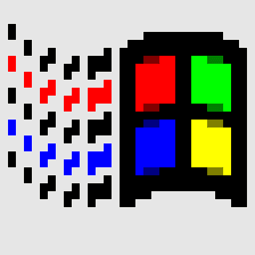

Męski Kompas - Welcome
x
Welcome to Męski Kompas
Przestrzeń Świadomej Męskości dla Mężczyzn z IT.
Spotkania co 2 tygodnie w centrum Warszawy
Warsztaty w małych grupach
Integracja z kursem Life Codebase
Click here to join!
 Start